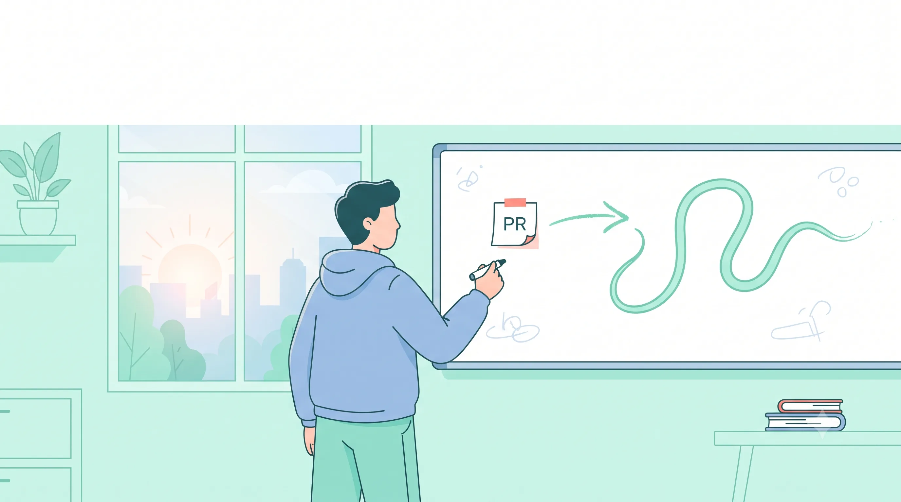
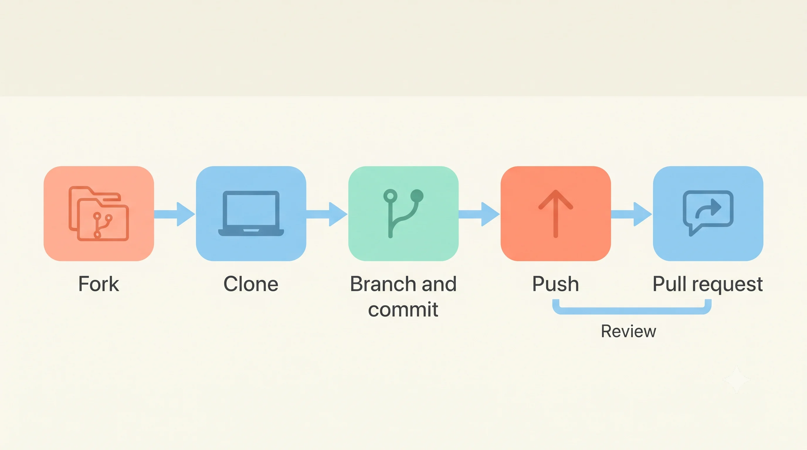

Your First Pull Request Is Not the Goal

Imagine you spent three evenings fixing a bug in an open source project. You pushed your code, opened a pull request, and felt proud. Then a week passed. Nobody replied, and you still do not know if your change is on main.
Many students feel this way on their first GitHub day. This blog explains what happened, and what to do next. The goal is not to get your change merged. The goal is to learn how a real project works, and the pull request is just the place where that learning happens.
Quick recap: Git and GitHub are different
In the Git blog, we covered Git. It runs on your computer and tracks the history of your files. GitHub is a website that hosts Git projects. It adds a place to talk about the project, track tasks, and review changes. You can use Git without GitHub, but most open source projects use both.
Push, pull, and pull request
These three words cause the most confusion, so let’s define them.
- Push sends your saved commits from your computer to a shared project on GitHub.
- Pull (
git pull) brings changes from the shared project into your own copy. - Pull request is a proposal. It asks the project’s maintainers to review your changes and pull them into main.
The name is confusing because the word “pull” is used in two ways. Think of the pull request as a question: “Can you include this?” The answer comes after review.
This is the most important point in this blog: creating a pull request does not change main. Until a maintainer accepts it, your change is only waiting for a decision.
Fork, then clone
Two words here sound alike, but they are different.
- Fork is a copy of a project in your GitHub account. You do it on the website, with the Fork button.
- Clone is a copy on your computer. You do it with
git clonein the terminal.
For a project you do not own, the usual flow is:
- Fork the project on GitHub.
- Clone your fork to your computer.
- Create a branch, make your change, and commit it.
- Push the branch to your fork.
- Open a pull request from your fork to the original project.
You clone the original project only when you have permission to push to it directly. Most students will fork first.

Find an issue before you write code
An issue is a task or problem written on a project’s page. Maintainers use issues to track bugs, feature ideas, and beginner tasks.
Here is how to pick one:
- Look for labels like “good first issue” or “help wanted.” Remember that a label is a hint, not a promise. Check that the issue is clear and that the project is still active.
- Read the project’s contributing file, usually named
CONTRIBUTING.md. It tells you how the team wants changes to look. - Comment on the issue before you start, like “I would like to work on this.” Many projects do not assign issues, so your comment tells others you are working on it.
Do not start a large change without asking first. A short question on the issue can save you days of wasted work.
Open your first pull request
Once your branch is pushed, GitHub usually shows a button to create a pull request. When you open it, check three things:
- Title: short and clear, like “fix login button crash on small screens.”
- Description: what changed, why it changed, and how someone can test it.
- Link to the issue: write “Fixes #123” in the description, where 123 is the issue number. This tells everyone which problem your change solves.
If your work is not finished, open a draft pull request. A draft tells reviewers the work is in progress and invites early feedback.
Reviews and updates
After you open your pull request, a maintainer may read it and leave comments. They may ask for changes. This is normal, and it is the part where most learning happens.
To update your pull request, make the change on the same branch, commit it, and push. The pull request updates on its own. You do not need to open a new one. Opening a second pull request for the same change creates confusion for the maintainers.
If your pull request is closed without being merged, the commits are not deleted. They stay on your branch, and you can still look at them. Read the reviewer’s comments and ask a question if you do not understand them.
Common mistakes
These are the mistakes most beginners make in their first pull requests:
- The mega pull request. You worked for a week and put everything into one change. Reviewers cannot read it quickly, so it waits. Split the work into smaller pull requests.
- The mystery pull request. The title is “fixes” and the description is empty. Reviewers have to guess what you changed.
- Waiting for main to change. You open a pull request and check main every hour. Nothing changes until it is reviewed and merged.
- Opening a second pull request. A reviewer asks for a change, so you open a new pull request instead of pushing to the first one.
Learn by doing
You can practice these steps without any risk to a real project. GitHub Skills has free, interactive courses that run inside real GitHub repositories. The course gives you instructions and checks your work as you go. GitHub says taking a course is free in public repositories.
Start with the “Introduction to GitHub” course. It walks you through creating a repository, making a branch, and opening a pull request.
Student Developer Pack
GitHub also offers the Student Developer Pack. It gives verified students access to free tools and services from GitHub and its partners. Eligibility depends on your school and status, and the rules can change. Check your own eligibility at education.github.com/pack before you apply. Do not assume you qualify, and do not assume a specific benefit is available unless the page says so.
Habits to build
After you learn the steps, these habits will help you more than any single command:
- Make small changes that do one thing.
- Write a clear title and a short description for every pull request.
- Link the issue you are fixing.
- Read the contributing file before you start.
- Ask on the issue before you begin a large change.
- Reply to review comments within a few days, even if the reply is only a question.
- Push updates to the same pull request instead of opening new ones.
your task for today
Open GitHub Skills and start the “Introduction to GitHub” course, or fork the First Contributions practice repository and follow its steps.
Back to that week of waiting
Remember the student who spent three evenings on a fix and then heard nothing for a week? By the end of this blog, you know what that silence means. The change is waiting for a decision, not rejected. Your pull request is one of the ways you learn how a real project thinks.
Your first pull request will probably not be the most important thing you do on GitHub. What stays with you is what you learned while making it: reading a project you did not write, writing a clear title, asking before you started, and staying with the feedback when it was not perfect.
If you finish this blog and nothing else, remember that the goal was never a merged change. The goal was to become someone who can work in a real project with other people.
Resources
- GitHub Skills: free, interactive courses inside real repositories
- GitHub Education, Student Developer Pack: check your eligibility yourself
- First Contributions: a practice repository for a first pull request
- CS000: a free beginner course on collaborative Git and GitHub
- Fork vs clone guide: a short written explanation of the difference
Ready for a safe first PR? Start the journey on this site ✱